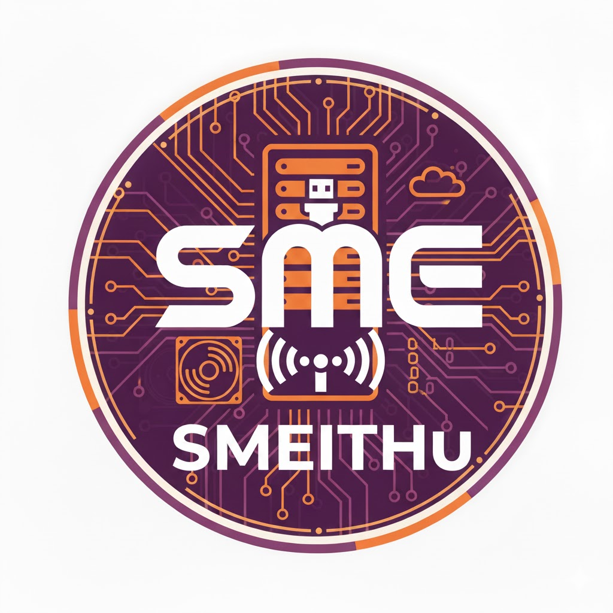

SMEITHu
Oldalunk **kisvállalati és oktatási környezetre szánt megoldásokat** fog tartalmazni.
Windows Server 2025 Tools Tároló
Ubuntu Server LTS Tools Tároló
🤖 SMEITHu Segéd
Szia! SMEITHu Segéd vagyok. Kérdezz a Windows Server 2025 vagy az Ubuntu LTS megoldásainkról!
Küldés